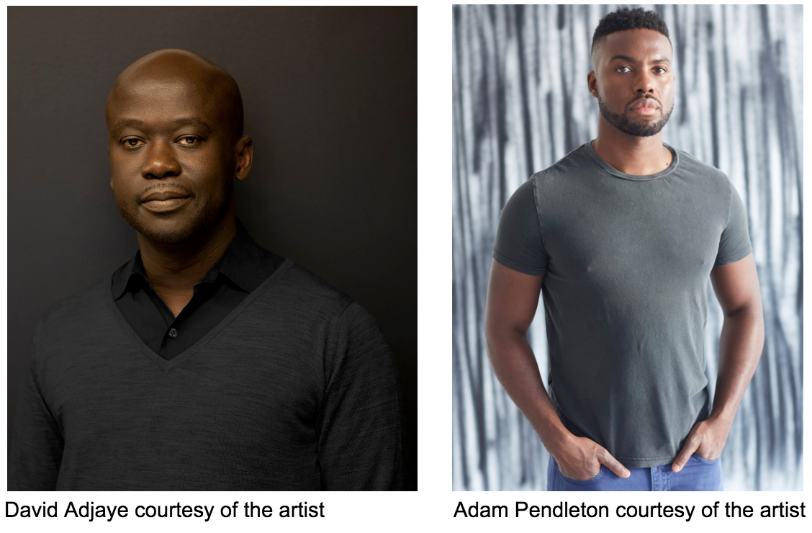
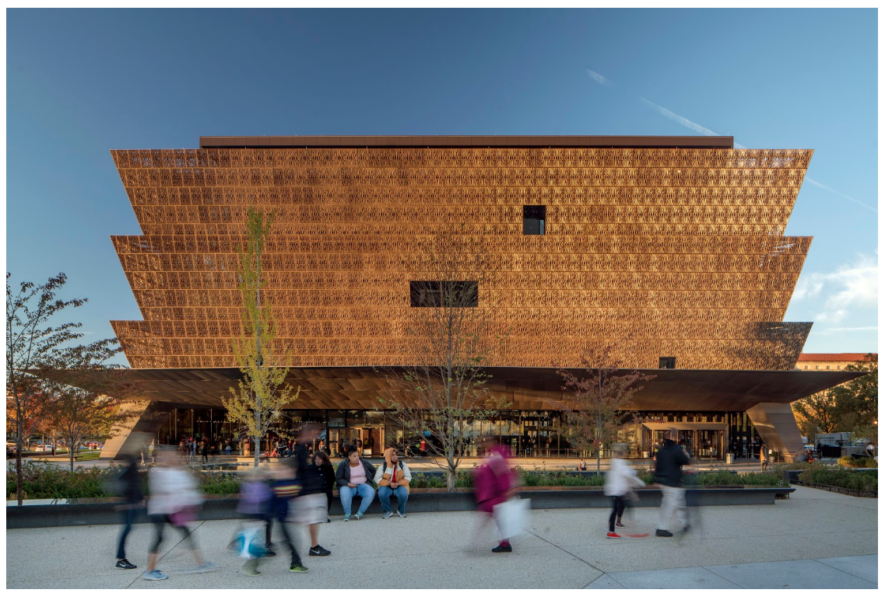
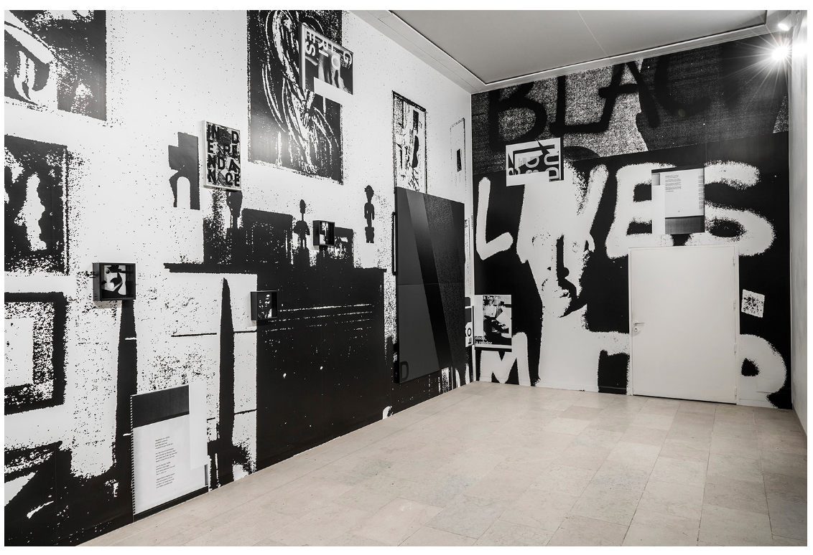
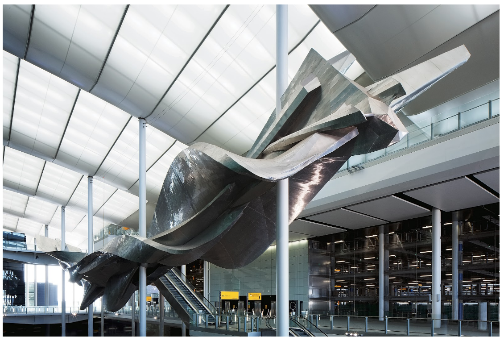

Our team, composed of architect David Adjaye, artist Adam Pendleton, and curators Future\Pace, brings together innovative artistic vision with a commitment to social transformation, proven project management experience, and responsive community involvement.
As Lead Designer for the National Museum of African American History and Culture in Washington D.C., David Adjaye created an innovative building that seeks to stimulate reflection, encourage open dialogue about race, and promote reconciliation and healing. Adjaye explains: “I believe in architecture as a social force that actually makes good. It’s an emancipatory form.”
Adam Pendleton juxtaposes thought-provoking images and language from the past and present, critically examining their resonance from varied aesthetic and theoretical perspectives. He integrates writings by Malcolm X, John Ashbery, Gertrude Stein, and others, combining a critical use of language, conceptual art, and activism. Pendleton also incorporates the language of civil rights and social justice movements throughout his work, including the phrase “Black Lives Matter” in his installation at the 2015 Venice Biennale.
Future\Pace collaborates with groundbreaking artists to enrich the urban environment. They facilitate the creation of public art that is responsive to the environment, history, and society, encouraging community involvement and interchange. Dr. Henry Louis Gates, Jr. is serving as an advisor to the project. Our multidisciplinary team shares a commitment to fill the current void in the representation of black culture in the public realm. We wish to see a memorial to Dr. Martin Luther King and Coretta Scott King that speaks to their inspiring vision for equality and justice.

Image credit: Nic Lehoux

Image courtesy of the artist, Adam Pendleton

Image courtesy of Future\Pace